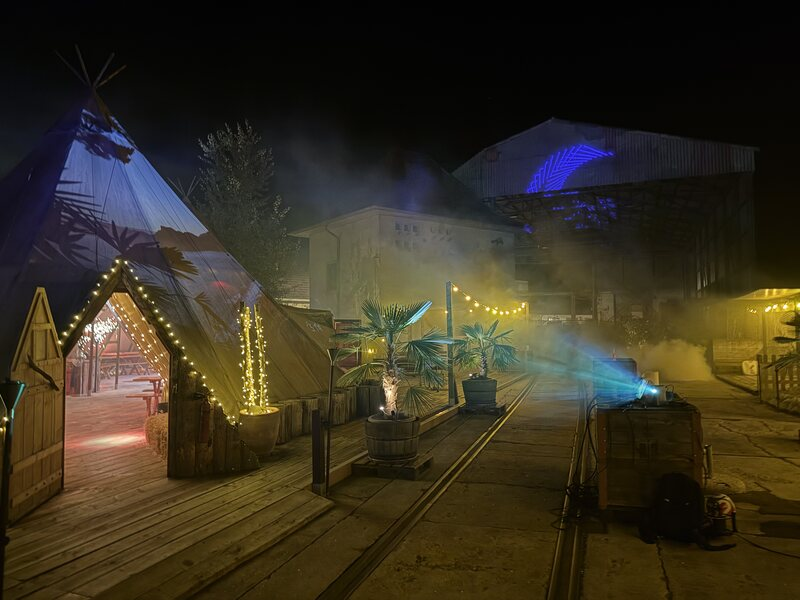
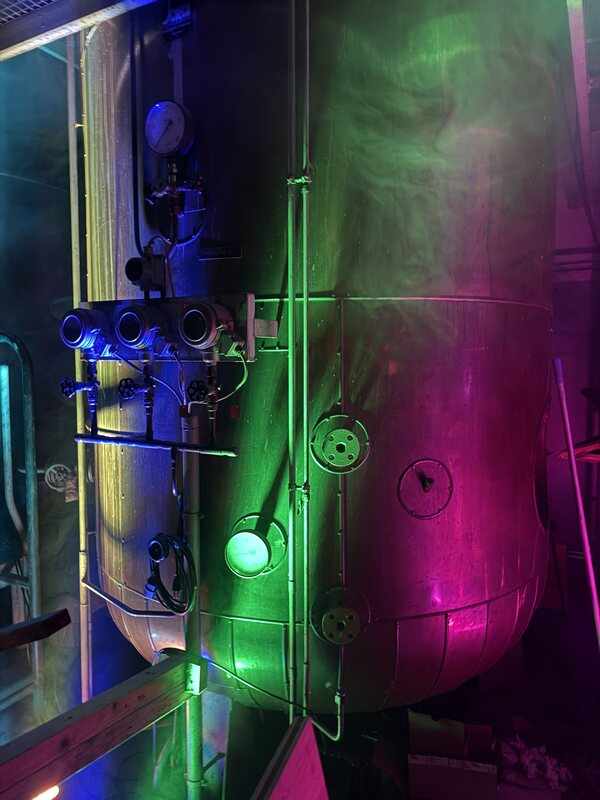
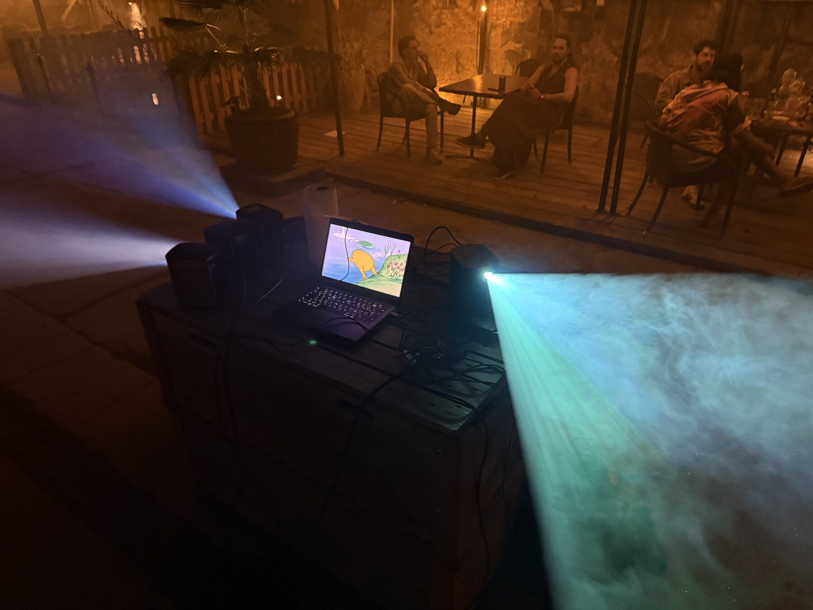

RECAP / 202604–05 SEPTEMBER 2026 · DORNACHArtXMusic
ArtXMusic
Festival 2026
Art and music in one place.
Our festival at Tipioase.
Next event:
21–24 January 2027
Gerbergasse 16
4051 Basel
Email us your work or a link to your portfolio.
artxmusicfestival@outlook.comGerbergasse 16 · 4051 Basel
Email us your work or a link to your portfolio.
Submit your work
RECAP / 2026Art and music in one place.
Our festival at Tipioase.
From the archive
04–05 September 2026 · Dornach

Art, music and encounters at Tipioase. A look back at our festival in Dornach.
7 photos · 2 videosExplore the recapNot every great idea is already in the spotlight. We make room for it.
ArtXMusic brings art and music together. Our “X” is the connection in between — between people, forms of expression and new perspectives.
As an association, we give emerging artists, musicians and DJs a platform. For first performances, new connections and creative growth.
Through events, projects and collaborations, we encourage exchange, community and cultural diversity.
There is room for your idea
Events & creative encounters
Michelle originally worked in transport and customs. Practical projects and her training in event management led her into the world of events — where she also met Vincent.
Their joint graduation project, “ArtConnection”, laid the foundation for giving new creative voices a platform. She brings that experience to ArtXMusic.
Art, space & light
Adriano is a gallerist, curator, lighting designer and owner of arkadia-design.ch. He brings art, space and light together to create immersive atmospheres.
Through his programming at Halle 80 and the Hair Atelier, he creates space for contemporary art and dialogue. Openness, experimentation, clear forms and a thoughtful approach to materials shape his work.
Today, Adriano works as an independent gallerist. His gallery is located in the Kunstpassage at Gerbergasse 16.
Music, visuals & connection
Vincent explores visual communication and digital spaces at the Basel Academy of Art and Design. His creative practice ranges from DJing and music production to visuals and art.
His experience organising art and music events fuels his desire to bring people together. He wants to create places for exchange, shared creative energy and a sense of belonging.
A mysterious wizard from an unknown dimension.
Do you make art or perform, DJ, sing or play an instrument? Would you like to get involved or collaborate with us — perhaps with your friends? Please let us know!
Let’s make something happen Interested in becoming a member? Get in touch. ↗Your support helps us create space for art, music and encounters.Every contribution helps us take this idea further.
Donate with TWINTChoose your amount and confirm in TWINT.